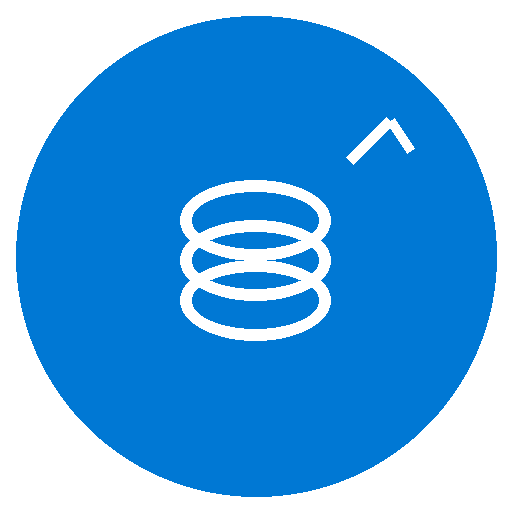
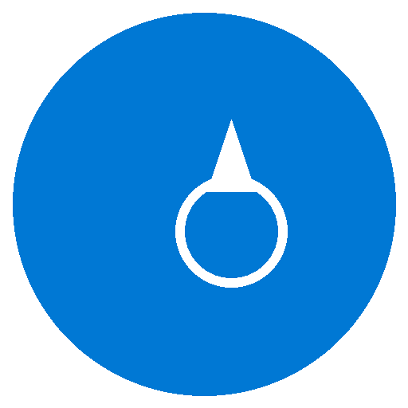
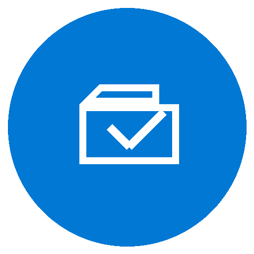
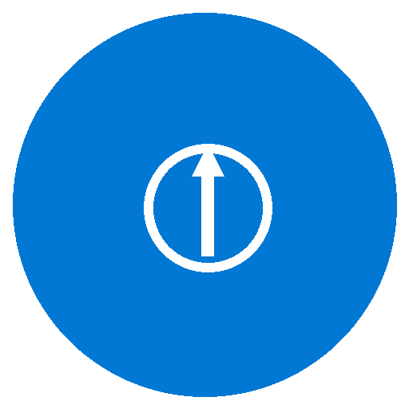
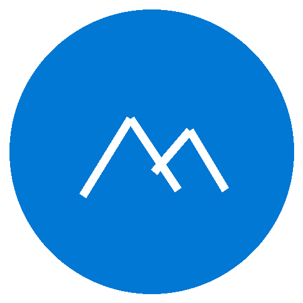
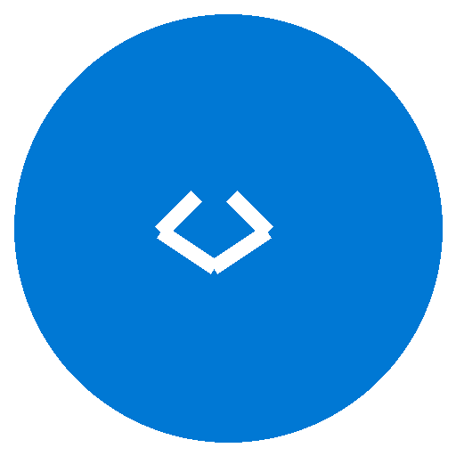

Why Summit Migrations
Summit Migrations was built on one principle: enterprise‑grade expertise delivered with genuine care for your organization and your outcome. We bring the technical depth of a large consultancy with the focus and accountability of a dedicated partner.

Deep M365 Expertise
Hands‑on Microsoft 365 migration experience across global enterprise environments, including Microsoft FastTrack.

Technical Guidance at Every Step
Active technical oversight from kickoff to close, mentoring teams, validating decisions, and keeping your migration moving with confidence.

Built for a Clean Landing
Information architecture, permissions hygiene, and SharePoint structure established before migration, so your users arrive to an organized, ready‑day‑one environment.

Committed to Your Outcomes
Reduced risk, predictable timelines, and a migration experience your users barely notice. That is the standard for every engagement.

Experienced in the Hard Ones
Calm, structured execution for high‑stakes, time‑sensitive, or technically constrained migrations where precision matters.

Invested in Your Success
We take time upfront to understand your users, environment, and goals, resulting in better decisions and fewer surprises.